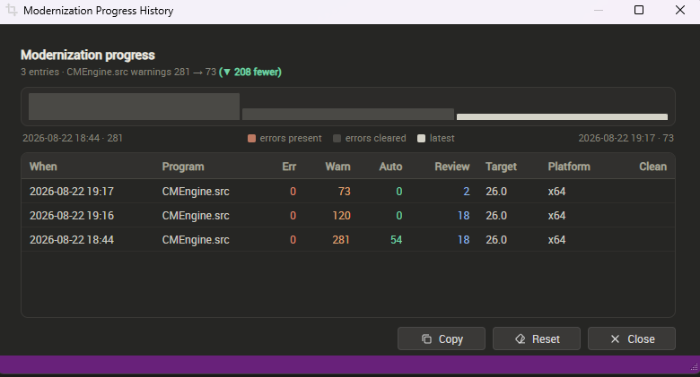

Modernization Progress
Modernizing a workspace is a loop, and a loop is hard to judge from inside it. DFRefactor records every analyze lap so you can see the numbers coming down instead of trying to remember what they were last time.
Nothing has to be switched on. Each analyze appends one entry to a per-workspace file, and the dashboard reads it back.
The readout on the dashboard
The guided card carries Modernization progress: the latest lap's warnings, errors, auto-fix and review counts, with the program it measured and when. Each count trails a small delta against the previous lap of the same series — teal down, coral up. Cycle N counts the laps recorded so far. Click it to open the history.
The history

Modernization Progress History opens on the current series' story: how many entries, and the warning count from the first lap to the latest, with how many fewer that is. Above, three Checks took one workspace from 281 warnings to 73 — and the auto-fixable count from 54 to nothing, which is what "the tool has done what it can" looks like.
Beneath the summary a sparkline draws the last 24 laps of that series. Bar height is the warning count against the series maximum, and colour carries the fact the table makes you hunt for: coral while that lap still had errors, muted once they are cleared, pale for the latest. A single lap draws nothing, because one point is not a trend.
The table lists every lap, newest first:
- When, Program — the timestamp and the series.
- Err, Warn — what the compiler reported. For an Analyze Source lap, Warn is the finding count and Err is always zero.
- Auto, Review — what the analyzer could fix outright, and what it would fix but wants you to check.
- Target — the DataFlex version you were modernizing toward at the time.
- Platform — x64 or x86, the platform that build targeted. Blank for an Analyze Source lap.
- Clean — a check mark when that lap came back with no errors and nothing actionable. This is worked out from the row, not stored, so it fills in for laps recorded before the column existed.
Series are never mixed
A lap is filed under what measured it. A Check, and any compile-and-analyze, files under the program it built — even though a Check scans the source too, because that pass is folded into the same result. Only Analyze Source run on its own files under its own name.
Deltas, cycle numbers, the trend line and the sparkline all compare within one series and never across, because a scan's finding count and a compiler's warning count are different magnitudes — putting them on one scale would invent a fall or a climb that never happened.
What does and does not get recorded
Re-analyzing without changing anything adds no row: an entry identical to the last one — same counts, same program, same platform — is dropped, so the history stays a record of laps that moved rather than of times you pressed the button. A lap that finds nothing is recorded, because converging on zero is the result worth keeping.
Reverting files with Undo Refactoring clears the current analyze, since it no longer matches what is on disk, but leaves the history alone. A selective revert does not undo the journey, and the next analyze records the bump honestly.
Copy and Reset
Copy puts the whole table on the clipboard as tab-separated text, oldest first so it reads as the burn-down story, with Clean and Exhausted spelled out as words. It pastes into a mail as a table and into Excel as columns.
Reset clears this workspace's history and starts a fresh baseline. It cannot be undone, and it affects only the workspace you are in.
See Modernization Analyzer for where the counts come from, and How to use the Program for the cycle itself.